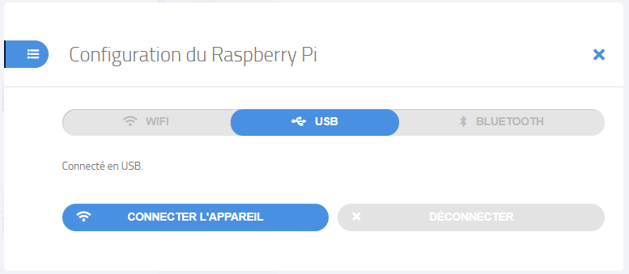

Cette option est la manière la plus simple de connecter le Raspberry à un PC, et devrait fonctionner sur tout ordinateur disposant d’un système d’exploitation relativement récent. En particulier, cela devrait fonctionner sous windows à partir de Windows Vista (sorti en 2007).
Branchez simplement le Raspberry Pi sur le port USB d’un PC à l’aide d’un câble USB vers micro-USB data (attention, les câbles très bon marché ne permettent parfois que l’alimentation, et non la transmission des données).
Cliquez ensuite sur "Connecter" dans l'interface de QuickPi :
Sélectionnez l'onglet USB. QuickPi détecte le Raspberry Pi, et le bouton "Connecter l'appareil" devient bleu.
 Cliquez alors sur "Connecter l'appareil". Après quelques instants, le bouton "Connecter" de l'interface se réduit et un bouton "Installer" apparaît.,Cela signifie que le Raspberry Pi est bien connecté, et que vous pouvez interagir avec.